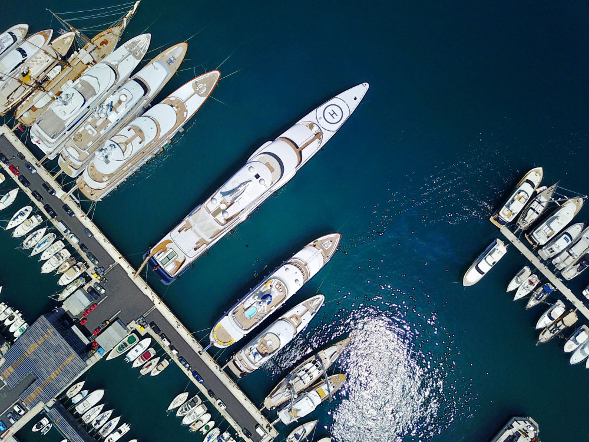

Ultimate Guide to Luxury Yacht Charters in Ibiza
By Yachts Zenith, 29.03.2024
Welcome aboard the ultimate luxury yacht charter experience in Ibiza. Explore the vibrant nightlife, pristine beaches, and hidden coves from the comfort of your private yacht. Whether you're planning a lively celebration or a peaceful escape, Ibiza offers an unparalleled yachting adventure. Discover the seamless blend of Mediterranean charm and unmatched amenities that will make your holiday truly unforgettable.

Formentera, Ibiza's sister island, is a must-visit. Its pristine beaches rival those of the Caribbean, with turquoise waters perfect for swimming.
Why Choose Ibiza?
People come to Ibiza not only to party but also for getting a mind-blowing experience and to explore the natural and cultural richness of the island. Surprise awaits behind every twist and turn, with Dalt Vila’s ancient allure to Formentera’s stunning natural beauty all competing to be your favourite part of a holiday to Ibiza. Cruising in Ibiza lets you connect with locations to be discovered only of the chosen ones, heavenly beach clubs, and the opportunity to do everything atyour convenience.
Best Time to Charter a Yacht in Ibiza
The best time for yacht charters in Ibiza is from late May to early October, with July and August being the peak months. During this period, the weather is idyllic, with long sunny days and mild evenings. However, for those seeking more tranquillity, the shoulder months of May, June, September, and October offer a quieter yet equally enjoyable experience.
Types of Yachts Available
From sleek motor yachts built for speed and luxury to spacious sailing yachts for those who love the romance of the sea, Ibiza's charter fleet is diverse. Catamarans offer stability and space, ideal for groups and families, while superyachts provide the epitome of luxury, with crew services that cater to your every need.
Motor Yachts
Speed & Luxury: Ideal for exploring the coastlines swiftly.
Amenities: Equipped with the latest technology and comfort.
Sailing Yachts
Romantic & Adventurous: Experience the thrill of sailing.
Eco-friendly: Harness the power of the wind.
Catamarans
Stability & Space: Perfect for groups seeking comfort.
Family-friendly: Ample space for entertainment and relaxation.
Superyachts
Ultimate Luxury: Tailored services and unparalleled opulence.
Exclusive Experiences: Access to the most secluded spots.
Planning Your Itinerary
An Ibiza yacht charter offers endless possibilities. Here’s a sample itinerary to inspire your journey:
- Day 1: Start in Ibiza Town, exploring the historic Dalt Vila before setting sail towards Es Vedrà, an iconic islet known for its mystical allure.
- Day 2: Head to Formentera, renowned for its crystal-clear waters and white sandy beaches. Enjoy water sports or relax at a chic beach club.
- Day 3: Explore the northern coast's rugged beauty, with stops at secluded bays perfect for snorkelling and sunbathing.
- Day 4: Experience Ibiza’s famous sunset at Cala Comte before enjoying the vibrant nightlife.
What to Pack
Packing for a yacht charter in Ibiza combines luxury with practicality. Essentials include:
- Swimwear & Beachwear: For daytime relaxation and water activities.
- Evening Attire: For nights out in Ibiza's exclusive venues.
- Sun Protection: Sunscreen, hats, and sunglasses are a must.
- Footwear: Deck shoes for on-board, comfortable shoes for exploring.
Ibiza is a Mediterranean gem that can only be explored in style by chartering a luxury boat. A boat charter in Ibiza may satisfy all of your desires, whether you're looking for adventure, leisure, or the best party atmosphere. Set out on an adventure-infused tour where luxury meets adventure and makes lasting impressions.
Expore Your Yacht Charter

Riva Argo 90
Motoryacht - 28,70m
Cruising Area - Balearics
View Yacht

Riva Rivale 56
Motoryacht - 17m
Cruising Area - Balearics
View Yacht